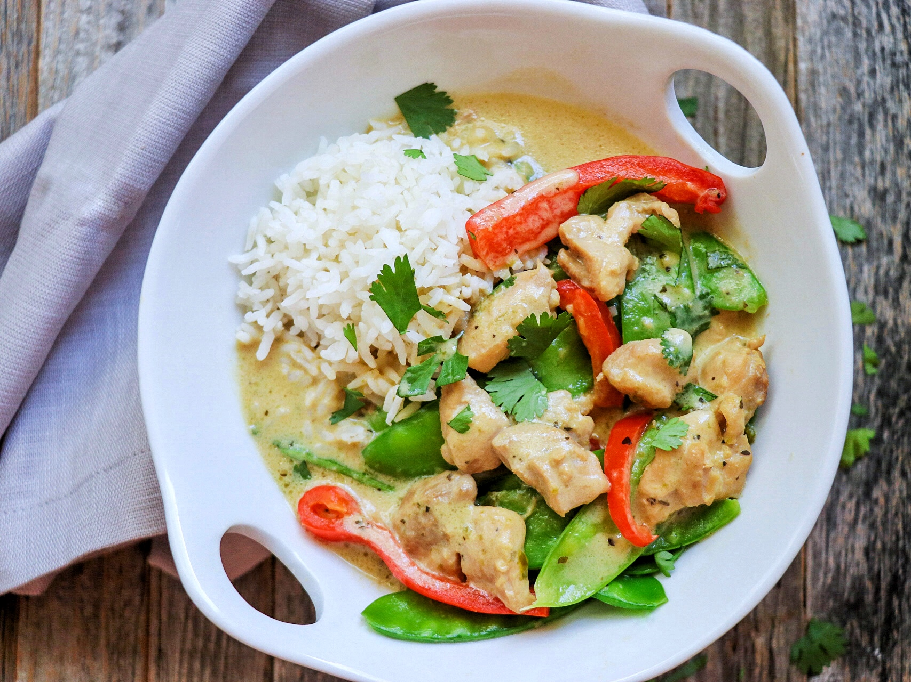

Thai Green Curry

INGREDIENTS
- 2 chicken breasts
- 1 can of coconut milk or low fat coconut milk
- 1 onion
- 1 aubergine
- 1 chopped green chilli
- Thai green curry paste
METHOD
- To make the curry, cook the paste in a large non-stick wok or large frying pan over a
low heat, for 5 minutes. Cut the chicken into strips and add to the pan with chopped onion. Cook
for 5-8 minutes or until no longer pink. Add the aubergine chopped.
- Stir in the coconut milk and simmer for about 10 minutes or until the chicken is cooked through. Scatter
over the chilli and serve with rice.
Back